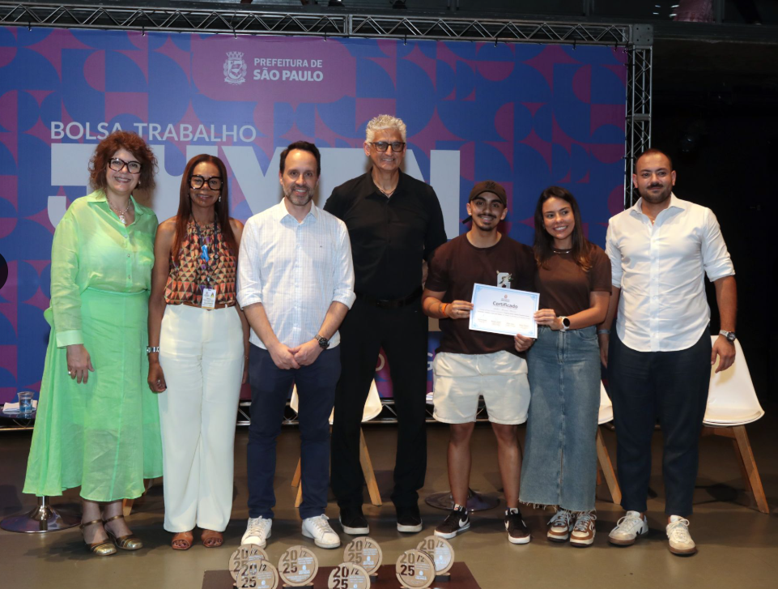
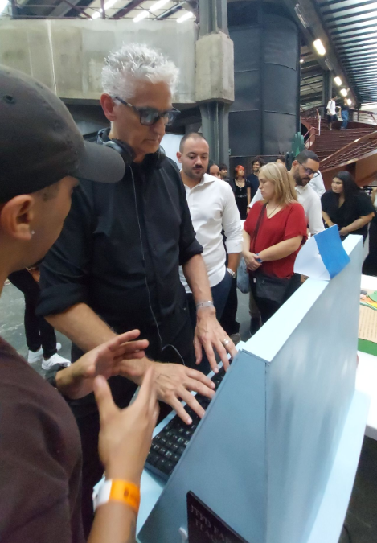
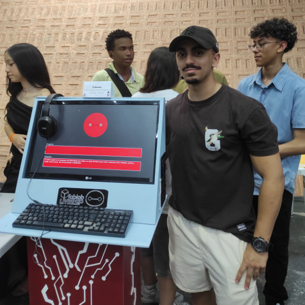

CONQUISTAS

Certificado de projeto - Reconhecido pela prefeitura de SP
Após o término e sucesso do robô com IA, recebi o certificado em cerimônia oficial.

Exposição de Projeto — FabLab Livre SP
Apresentei projeto no FabLab Livre SP, instituição de tecnologia vinculada à Prefeitura de São Paulo.

Projeto reconhecido por gestores públicos
O projeto foi apresentado e reconhecido por gestores e secretários da Prefeitura de São Paulo.
Sobre mim
Quem sou
Sou Arthur Mansur — Desenvolvedor Back‑End em formação, com foco em construir APIs e soluções web escaláveis.
Atualmente sou Tecnólogo em Análise e Desenvolvimento de Sistemas (previsão de conclusão: 2027) pela UNICSUL e tenho formação técnica em Tecnologia da Informação pelo IFSP (concluído em 2025). Busco sempre aplicar práticas de código limpo, testes e integração contínua nas entregas.
Além das principais tecnologias que trabalho, citadas nas habilidades, também atuo com infraestrutura e hardware (manutenção, redes TCP/IP, Windows/Linux, Arduino/Raspberry Pi) e integrações de IoT com modelos de IA.
Habilidades
Java
Base sólida com foco em OO e código limpo.
SQL
Modelagem e consultas eficientes.
Next.js
Aplicações React server-side e estáticas.
Node.js
APIs e runtime JavaScript no servidor.
React
Construção de UIs reativas e componentes.
TypeScript
Tipagem estática e código escalável.
GitHub
Versionamento e documentação.
Git
Fluxos e histórico limpo.